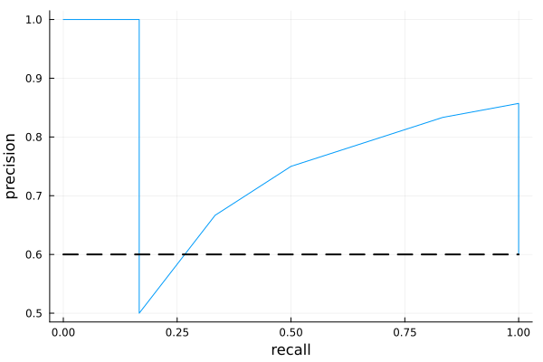

Precision-Recall Curves
In binary classification problems, precision-recall curves (or PR curves) are a popular alternative to Receiver Operator Characteristics when the target values are highly imbalanced.
Example
using StatisticalMeasures
using CategoricalArrays
using CategoricalDistributions
# ground truth:
y = categorical(["X", "O", "X", "X", "O", "X", "X", "O", "O", "X"], ordered=true)
# probabilistic predictions:
X_probs = [0.3, 0.2, 0.4, 0.9, 0.1, 0.4, 0.5, 0.2, 0.8, 0.7]
ŷ = UnivariateFinite(["O", "X"], X_probs, augment=true, pool=y)
ŷ[1]UnivariateFinite{OrderedFactor{2}}(O=>0.7, X=>0.3)using Plots
recalls, precisions, thresholds = precision_recall_curve(ŷ, y)
plt = plot(recalls, precisions, legend=false)
plot!(plt, xlab="recall", ylab="precision")
# proportion of observations that are positive:
p = precisions[end] # threshold=0
plot!([0, 1], [p, p], linewidth=2, linestyle=:dash, color=:black)
Reference
StatisticalMeasures.precision_recall_curve — Function
precision_recall_curve(ŷ, y) -> recalls, precisions, thresholdsReturn data for plotting the precision-recall curve (PR curve) for a binary classification problem. The first point on the corresponding curve is always (recall, precision) = (0, 1), while the last point is always (recall, precision) = (1, p) where p is the proportion of positives in the observed sample y.
Here ŷ is a vector of UnivariateFinite distributions (from CategoricalDistributions.jl) over the two values taken by the ground truth observations y, a CategoricalVector. The thresholds, listed in descending order, are the distinct predicted probabilities of the positive class.
If thresholds has length k, the interval [0, 1] is partitioned into k+1 bins. The precison and recall are constant within each bin:
[0.0, thresholds[k])[thresholds[k], thresholds[k - 1])- ...
[thresholds[1], 1]
Accordingly, precisions and recalls have length k+1 in that case.
To plot the curve using your favorite plotting library, do something like plot(recalls, precisions).
Core algorithm: Functions.precision_recall_curve.
using StatisticalMeasures
using CategoricalArrays
using CategoricalDistributions
# ground truth:
y = categorical(["X", "O", "X", "X", "O", "X", "X", "O", "O", "X"], ordered=true)
# probabilistic predictions:
X_probs = [0.3, 0.2, 0.4, 0.9, 0.1, 0.4, 0.5, 0.2, 0.8, 0.7]
ŷ = UnivariateFinite(["O", "X"], X_probs, augment=true, pool=y)
ŷ[1]
using Plots
recalls, precisions, thresholds = precision_recall_curve(ŷ, y)
plt = plot(recalls, precisions, legend=false)
plot!(plt, xlab="recall", ylab="precision")
# proportion of observations that are positive:
p = precisions[end] # threshold=0
plot!([0, 1], [p, p], linewidth=2, linestyle=:dash, color=:black)